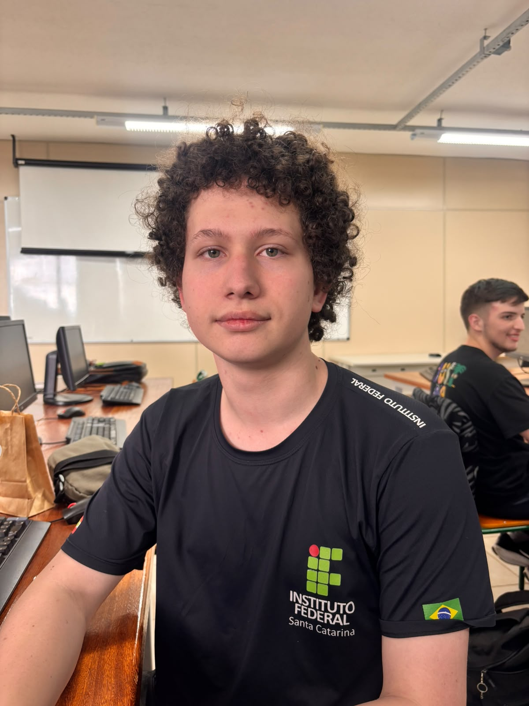
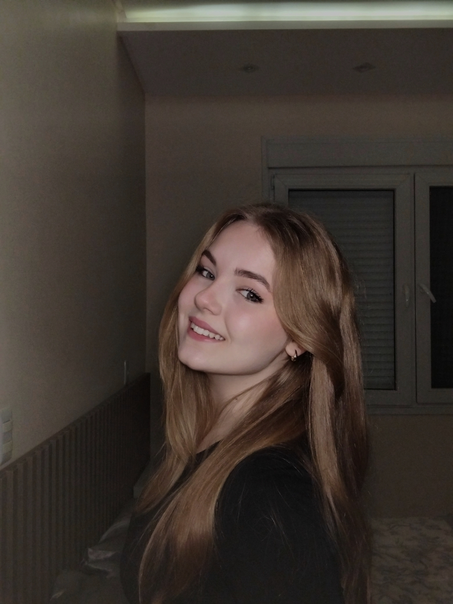
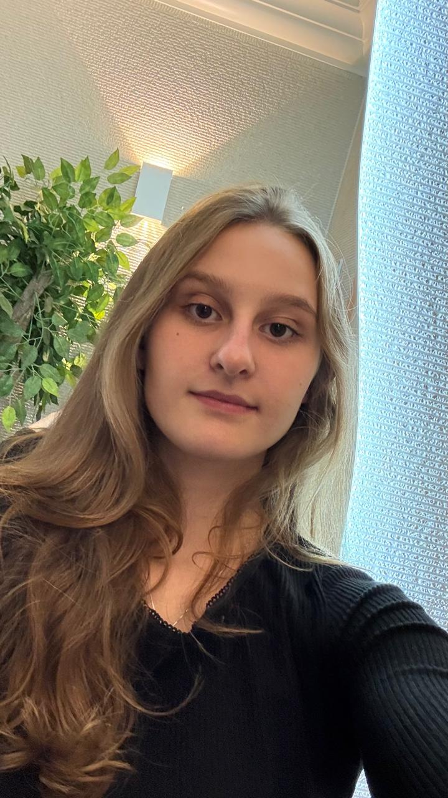

Heitor
Projeto da Oficina de Integração de Encontro de Livros.
Somos estudantes de Módulo 3 do curso Técnico em Desenvolvimento de Sistemas (TDS) do IFSC e desenvolvemos o POIEL com o objetivo de tornar os livros mais acessíveis e incentivar o compartilhamento de conhecimento.
A ideia do POIEL surgiu da vontade de dar mais oportunidades para os livros que já foram lidos. Queremos facilitar o acesso à leitura, permitindo que estudantes troquem livros entre si, encontrem novas histórias e aproveitem melhor os livros que já têm.
Além disso, queremos aproximar pessoas que gostam de assuntos parecidos, criando um espaço para compartilhar interesses e descobrir novas leituras.
Adicione ao seu acervo um livro que você já leu e gostaria de trocar.
Busque títulos disponíveis no campus e encontre sua próxima leitura
Escolha um livro do seu acervo para oferecer em troca.
Trabalho, Tecnologia e Poder
Pensamos que um livro pode conter várias narrativas. além daquilo que está registrado em suas páginas. Com o POIEL, buscamos incentivar o movimento de livros, conectar leitores e demonstrar que o conhecimento pode ser compartilhado.

Heitor

Liz

Heloísa
Julia
Sofia
Emanuely